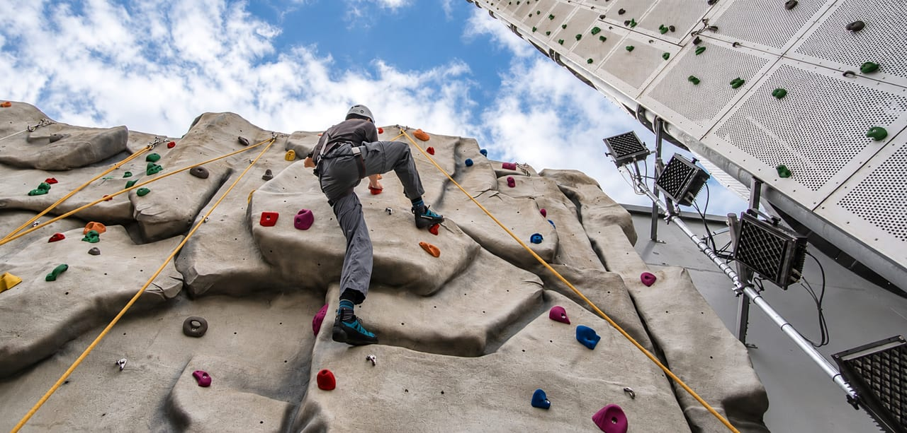

The outdoor education centre on Exeter's waterfront has a 23 m climbing tower and a 45 m canal pontoon.
- Client
- Devon County Council / NPS South West
- CASE role
- Civil and structural engineering
- Construction contract
- £5.6m
- Opened
- July 2013
The steel frames give open internal spaces on a narrow waterfront site. The piled foundations had to work around high groundwater and the concrete anchor blocks of the existing quay and canal walls.
